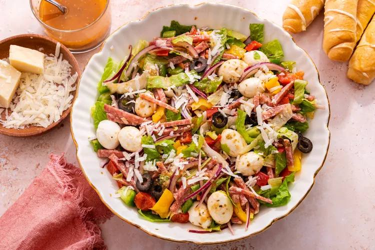

Pizza Salad

Description
Featuring all your favorite pizza toppings in one big bowl, pizza salad is all about flavor and fun.
Ingredients
For the dressing (makes 1 cup):
- 1/4 cup red wine vinegar
- 1 teaspoon tomato paste
- 2 teaspoons Dijon mustard
- 1/2 teaspoon sugar
- 1 1/2 teaspoons dried oregano
- 1 teaspoon garlic powder
- 2 teaspoon kosher salt
- 1 teaspoon black pepper
- 3/4 cup extra-virgin olive oil
For the salad:
- 6 ounces sliced pepperoni slices
- 5 ounces mini mozzarella balls (or large balls, quartered)
- 2/3 cup sliced black olives
- 1 cup sliced red onion
- 2 cups chopped bell pepper (yellow, red, green)
- 4 packed cups shredded iceberg lettuce
- 4 packed cups chopped romaine lettuce
- 1/2 cup freshly, finely grated Parmesan cheese
For serving:
- 4 breadsticks
Steps
- Add the red wine vinegar, tomato paste, Dijon mustard, salt, pepper, sugar, dried oregano,garlic powder and olive oil to a resealable jar or airtight container. Shake really well to combine. Taste and season with more salt, pepper and sugar as desired; it should be a very flavorful, emulsified vinaigrette.
- Add pepperoni, mozzarella cheese, black olives, red onion, bell pepper and both lettuces to a large bowl.
- Once ready to serve, shake the dressing really well once more. Add about half to the bowl with the salad and toss until everything is well and evenly coated. Add more dressing if desired, and keep the rest in the jar in the fridge for up to 3 days. Top the salad with grated Parmesan cheese and serve immediately with warm breadsticks on the side.